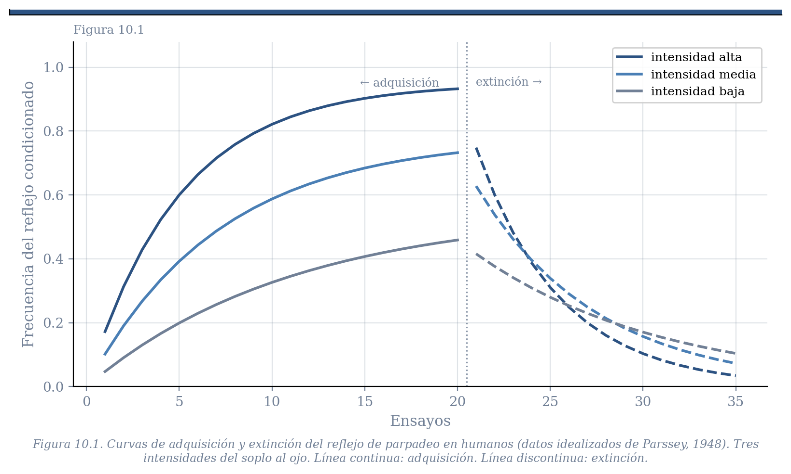
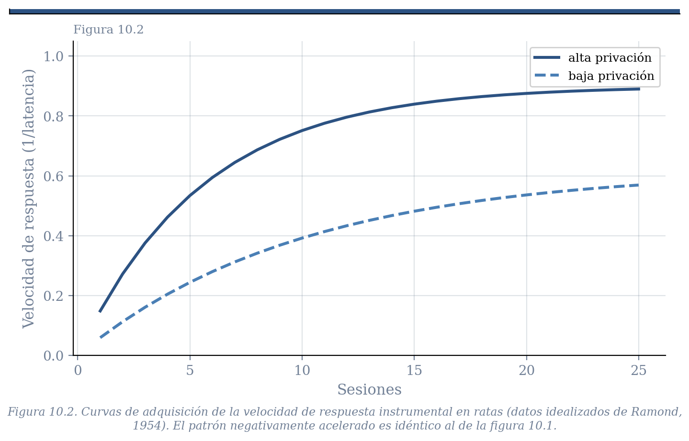
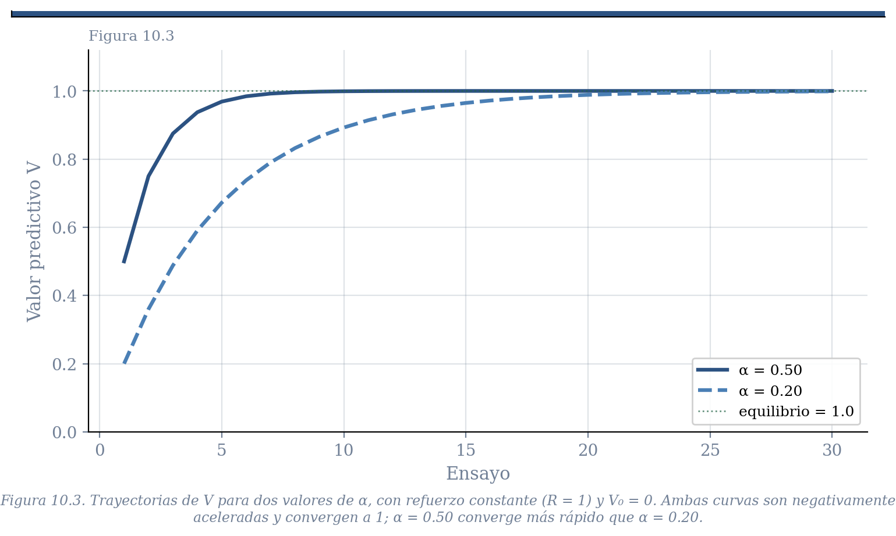

10 Aprendizaje por Refuerzo
10.1 El Modelo de Bush y Mosteller
Los capítulos anteriores dejaron pendiente una promesa. En los capítulos de kinesis y retroalimentación vimos mecanismos que permiten a los organismos orientarse, navegar y regular variables internas con notable eficiencia. Pero tienen una limitación que señalamos entonces: responden a lo que ocurre ahora, sin ninguna capacidad de anticipar lo que está por ocurrir. El conductor que carga gasolina solo cuando el tanque está vacío llegará varado tarde o temprano. Lo que le falta es la capacidad de aprender que ciertas señales predicen la necesidad futura.
Los capítulos 6 y 7 establecieron las condiciones empíricas bajo las cuales esa capacidad predictiva se desarrolla —y las condiciones bajo las cuales no se desarrolla. Mostraron que los organismos son detectores de covariación estadística: aprenden que ciertos estímulos predicen SBIs, y que ciertas respuestas los producen. Pero no describieron el mecanismo formal que hace posible esa detección.
Este capítulo presenta ese mecanismo. En 1951, Robert Bush y Frederick Mosteller propusieron una ecuación de actualización que ha demostrado ser, pese a su simplicidad, una de las más productivas de la psicología del siglo XX. La ecuación puede leerse de tres maneras distintas. Las tres son algebraicamente idénticas, pero cada una ilumina un aspecto diferente de lo que el mecanismo hace y por qué tiene la forma que tiene.
Antes de la ecuación, sin embargo, conviene observar los datos que debe explicar.
10.2 Las curvas de aprendizaje
Desde finales del siglo XIX, el estudio del aprendizaje ha producido una regularidad empírica notable: cuando un organismo experimenta repetidamente la relación entre un evento y un SBI, alguna medida de su comportamiento cambia de forma característica. Aumenta rápidamente al principio y se va estabilizando conforme el aprendizaje madura. La curva resultante es negativamente acelerada —ganancias grandes al inicio, decrecientes con la práctica.
La figura 8.1 muestra un ejemplo con condicionamiento clásico: la frecuencia del reflejo de parpadeo en humanos expuestos a un tono seguido de un soplo al ojo, con diferentes intensidades del soplo (Parssey, 1948). La figura 8.2 muestra un ejemplo instrumental: la velocidad con que ratas tocan una palanca que produce comida, con diferentes niveles de privación (Ramond, 1954). La forma de la curva es la misma en ambos casos —estímulo o respuesta, condicionamiento clásico o instrumental, rata o humano. El modelo que presentamos en este capítulo debe poder explicar ese patrón. Al final del capítulo veremos por qué lo logra.


Nota. La curva negativamente acelerada es el patrón promedio, pero existe un debate sobre si refleja el aprendizaje de organismos individuales o es un artefacto estadístico. Si distintos organismos aprenden de manera abrupta —un cambio discreto de no responder a responder— pero en ensayos distintos, el promedio grupal producirá una curva continua aunque ningún individuo la siga. Skinner, Estes y más recientemente Gallistel han insistido en analizar datos de sujetos individuales por esta razón. En un capítulo posterior, cuando examinemos los modelos de Gallistel sobre tiempo y correlaciones, veremos que esa discusión tiene consecuencias formales sobre cómo debe concebirse el mecanismo de aprendizaje.
10.3 Aprendizaje por Refuerzo: elementos comunes
Todos los modelos de aprendizaje por refuerzo comparten una arquitectura básica. A cada evento que puede predecir un SBI —sea un estímulo condicionado o una respuesta— se le asigna un número que representa su valor predictivo actual. A lo largo del siglo XX ese número recibió distintos nombres: fuerza del reflejo, fuerza del hábito, fuerza asociativa. Nosotros lo llamaremos valor predictivo —\(V\) cuando hablemos de estímulos, \(Q\) cuando hablemos de respuestas— aunque en lo que sigue usaremos \(V\) para los dos salvo donde la distinción importe.
Una aclaración terminológica que conviene hacer desde el inicio: en la literatura matemática del aprendizaje, al SBI se le llama refuerzo y se representa con \(R\) o con \(\lambda\). Usaremos ese término en las ecuaciones y derivaciones que siguen, recordando que es exactamente el mismo concepto que en los capítulos anteriores llamamos suceso biológicamente importante. Refuerzo = SBI.
El modelo propone que \(V\) se actualiza en cada ensayo —cada vez que el evento se presenta— como función de lo que ocurre en ese ensayo. Si el evento va seguido del refuerzo, \(V\) sube. Si ocurre sin refuerzo, \(V\) baja. El mero paso del tiempo entre ensayos no cambia \(V\); solo la experiencia directa con el evento lo modifica. Por eso se dice que son modelos basados en ensayos.
El modelo es una instancia de un sistema de retroalimentación, como los que vimos en el capítulo 5. La función del organismo transforma refuerzos en valor predictivo. La función del entorno —los programas de refuerzo que estudiaremos en bloques posteriores— transforma el comportamiento en consecuencias. Las dos funciones están acopladas en un lazo cerrado.
10.4 Ecuaciones en diferencia: un lenguaje ya conocido
Antes de escribir la ecuación, conviene reconocer su forma. En capítulos anteriores encontramos ecuaciones que describen cómo una variable cambia de un momento al siguiente como función de su valor previo y de alguna influencia externa. En el ejemplo de los contagios de covid, el número de casos hoy dependía del número de casos ayer y de la tasa de transmisión. En el modelo de ascenso de colina, el valor de la variable de decisión en el siguiente instante dependía de su valor actual y del cambio detectado en el entorno.
Esas ecuaciones se llaman ecuaciones en diferencia: expresan el estado del sistema en el tiempo \(t+1\) como función del estado en el tiempo \(t\). Son ecuaciones recursivas que se aplican en cada paso al resultado del paso anterior, y siempre requieren especificar un valor inicial.
El modelo de Bush y Mosteller es exactamente una ecuación de esa naturaleza. \(V_{t+1}\) —el valor predictivo en el siguiente ensayo— depende de \(V_t\) —el valor acumulado hasta ahora— y de \(R_t\) —si hubo o no refuerzo en el ensayo actual. La dinámica que produce es la misma clase de trayectoria que ya conocen: un sistema que evoluciona ensayo a ensayo, que puede tener un equilibrio, y cuya trayectoria depende de los parámetros y del valor inicial.
10.5 Primera lectura: el integrador con fuga
La forma más directa de pensar en el modelo es como un proceso de carga y descarga. Cada refuerzo carga —fortalece— el valor del evento, y cada presentación sin refuerzo lo descarga —lo debilita. En este marco, \(V\) (o \(Q\)) es la cantidad de carga del sistema en cada momento. La batería del teléfono es el análogo cotidiano: se carga mientras está conectada, se descarga mientras se usa, y en ningún momento llega a cero de golpe ni alcanza el máximo instantáneamente.
Asumimos que \(V_{t+1}\) depende de solo dos factores: el valor acumulado hasta ahora, \(V_t\), y lo que ocurrió en el ensayo actual, \(R_t\) —que vale 1 si hubo refuerzo y 0 si no lo hubo.
El punto clave es que estos dos factores no siempre deben tener el mismo peso. En un entorno muy estable, donde la historia acumulada es un buen predictor del futuro, tiene sentido darle más peso a la experiencia pasada que al ensayo actual. En un entorno cambiante, donde el pasado distante es poco relevante, tiene sentido darle más peso a la experiencia reciente. El parámetro \(\alpha\) —entre 0 y 1— captura exactamente esa importancia relativa: cuánto pesa la experiencia acumulada frente al nuevo refuerzo. Si los dos factores deben sumar 1, la ecuación queda:
\[V_{t+1} = (1-\alpha)\,V_t + \alpha\,R_t \qquad \text{donde } 0 < \alpha < 1\]
Esta es la ecuación del integrador con fuga. El parámetro \((1-\alpha)\) es el peso de la historia acumulada; \(\alpha\) es el peso del refuerzo actual.
Para ver los dos procesos por separado, conviene examinar cada caso. Cuando hay refuerzo (\(R_t = 1\)), la ecuación carga el sistema: \(V_{t+1} = (1-\alpha)V_t + \alpha\), y el incremento es proporcional a qué tan lejos está \(V\) de su máximo. Cuando no hay refuerzo (\(R_t = 0\)), la ecuación se reduce a:
\[V_{t+1} = (1-\alpha)\,V_t\]
En este caso la descarga es pura: cada presentación del evento sin refuerzo multiplica la carga actual por \((1-\alpha)\), reduciéndola en una fracción \(\alpha\). Un sistema con mucha carga acumulada pierde más en términos absolutos que uno con poca carga —exactamente como una batería que se descarga más rápido cuando está llena que cuando está casi vacía.
Cuando \(\alpha\) es cercano a 0, la historia acumulada domina: cada nuevo ensayo apenas mueve la cantidad de carga, y el sistema es resistente a fluctuaciones pero lento para detectar cambios reales. Cuando \(\alpha\) es cercano a 1, el refuerzo actual domina: el sistema responde rápido a cambios pero es volátil ante fluctuaciones accidentales. Pensemos en una amistad de muchos años que siempre ha sido positiva. Una mañana esa persona no te saluda. Con \(\alpha\) cercano a 0, ese evento apenas altera tu valoración de la relación —la historia pesa más. Con \(\alpha\) cercano a 1, ese único evento tiene un peso desproporcionado sobre años de experiencia acumulada. Ninguno de los dos extremos es adaptativo en general; el valor óptimo de \(\alpha\) depende de qué tan estable y predecible sea el entorno. Podemos ver que la velocidad del aprendizaje depende del valor de \(\alpha\), y es así como se le conoce en los libros de texto estandard.
La ecuación puede expresarse de dos formas equivalentes que la literatura usa indistintamente. La primera enfatiza el nivel del valor predictivo ensayo a ensayo:
\[V_{t+1} = (1-\alpha)\,V_t + \alpha\,R_t\]
La segunda enfatiza el cambio de ensayo a ensayo. Si definimos \(\Delta V = V_{t+1} - V_t\), restando \(V_t\) de ambos lados:
\[\Delta V = \alpha\,(R_t - V_t)\]
Ambas formas son idénticas. La primera es útil para simular la trayectoria de \(V\); la segunda hace visible de inmediato que el cambio es proporcional a la discrepancia entre lo que ocurrió y lo que se esperaba —anticipando la segunda lectura.
Para ver cómo funciona la primera forma, sigamos el siguiente ejemplo numérico. Con \(\alpha = 0.5\), \(V_0 = 0\), y cuatro ensayos de adquisición seguidos de tres de extinción:
| Ensayo | \(R_t\) | \(V_t\) | \(V_{t+1} = 0.5\,V_t + 0.5\,R_t\) | Fase |
|---|---|---|---|---|
| 1 | 1 | 0.000 | 0.500 | Adquisición |
| 2 | 1 | 0.500 | 0.750 | Adquisición |
| 3 | 1 | 0.750 | 0.875 | Adquisición |
| 4 | 1 | 0.875 | 0.938 | Adquisición |
| 5 | 0 | 0.938 | 0.469 | Extinción |
| 6 | 0 | 0.469 | 0.234 | Extinción |
| 7 | 0 | 0.234 | 0.117 | Extinción |
Noten el patrón en ambas fases. Durante la adquisición, el \(V\) obtenido en cada ensayo se convierte en el nuevo \(V_t\) del ensayo siguiente; el valor crece rápidamente al principio y se desacelera conforme se aproxima a 1. Durante la extinción —cuando \(R_t = 0\) y la ecuación se reduce a \(V_{t+1} = (1-\alpha)V_t\)— el proceso se invierte: la carga disminuye en cada ensayo en una fracción \(\alpha\) de su valor actual. Desde 0.938, la descarga es más rápida que desde 0.234, porque hay más carga que perder. Con \(\alpha = 0.2\) el proceso de adquisición es más lento: \(V_1 = 0.2\), \(V_2 = 0.36\), \(V_3 = 0.488\), \(V_4 = 0.590\); y la extinción también es más lenta. La forma de las trayectorias es la misma; cambia la velocidad.
